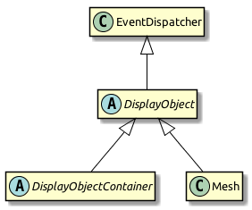
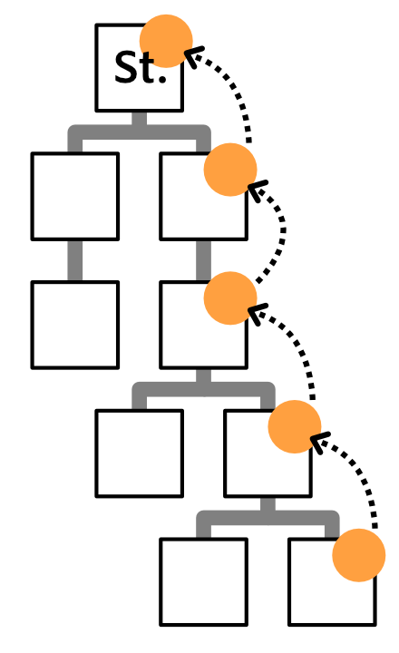
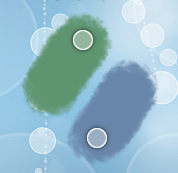

/------------\
| MessageBox |
\-----+------/
|
| Method
v
/---+----\
| Button |
\--------/
Event Handling
You can think of events as occurrences of any kind that are of interest to you as a programmer.
-
For example, a mobile app might notify you that the device orientation has changed, or that the user just touched the screen.
-
On a lower level, a button might indicate that it was triggered, or a knight that he has run out of health points.
That’s what Starling’s event mechanism is for.
Motivation
The event mechanism is a key feature of Starling’s architecture. In a nutshell, events allow objects to communicate with each other.
You might think: we already have a mechanism for that — methods! That’s true, but methods only work in one direction. For example, look at a MessageBox that contains a Button.
The message box owns the button, so it can use its methods and properties, e.g.
class MessageBox extends DisplayObjectContainer
{
private var _yesButton:Button;
private function disableButton():Void
{
_yesButton.enabled = false; (1)
}
}| 1 | Communicate with the Button via a property. |
The Button instance, on the other hand, does not own a reference to the message box. After all, a button can be used by any component — it’s totally independent of the MessageBox class. That’s a good thing, because otherwise, you could only use buttons inside message boxes, and nowhere else. Ugh!
Still: the button is there for a reason — if triggered, it needs to tell somebody about it! In other words: the button needs to be able to send messages to its owner, whoever that is.
/------------\
| MessageBox |
\------------/
^
| Event
|
/---+----\
| Button |
\--------/
Event & EventDispatcher
I have something to confess: when I showed you the class hierarchy of Starling’s display objects, I omitted the actual base class: EventDispatcher.

This class equips all display objects with the means to dispatch and handle events. It’s not a coincidence that all display objects inherit from EventDispatcher; in Starling, the event system is tightly integrated with the display list. This has some advantages we will see later.
Events are best described by looking at an example.
Imagine for a moment that you’ve got a dog; let’s call him Einstein. Several times each day, Einstein will indicate to you that he wants to go out for a walk. He does so by barking.
class Dog extends Sprite
{
var timeToPee:Bool = false;
function advanceTime():Void
{
if (timeToPee)
{
var event:Event = new Event("bark"); (1)
dispatchEvent(event); (2)
}
}
}
var einstein:Dog = new Dog();
einstein.addEventListener("bark", onBark); (3)
function onBark(event:Event):Void (4)
{
einstein.walk();
}| 1 | The string bark will identify the event. It’s encapsulated in an Event instance. |
| 2 | Dispatching event will send it to everyone who subscribed to bark events. |
| 3 | Here, we do subscribe by calling addEventListener. The first argument is the event type, the second the listener (a function). |
| 4 | When the dog barks, this method will be called with the event as parameter. |
You just saw the three main components of the event mechanism:
-
Events are encapsulated in instances of the Event class (or subclasses thereof).
-
To dispatch an event, the sender calls dispatchEvent, passing the Event instance along.
-
To listen to an event, the client calls addEventListener, indicating which type of event he is interested in and the function or method to be called.
From time to time, your aunt takes care of the dog. When that happens, you don’t mind if the dog barks — your aunt knows what she signed up for! So you remove the event listener, which is a good practice not only for dog owners, but also for Starling developers.
einstein.removeEventListener("bark", onBark); (1)
einstein.removeEventListeners("bark"); (2)| 1 | This removes the specific onBark listener. |
| 2 | This removes all listeners of that type. |
So much for the bark event.
Of course, Einstein could dispatch several different event types, for example howl or growl events.
It’s recommended to store such strings in static constants, e.g. right in the Dog class.
class Dog extends Sprite
{
public static final BARK:String = "bark";
public static final HOWL:String = "howl";
public static final GROWL:String = "growl";
}
einstein.addEventListener(Dog.GROWL, burglar.escape);
einstein.addEventListener(Dog.HOWL, neighbor.complain);Starling predefines several very useful event types right in the Event class. Here’s a selection of the most popular ones:
-
Event.TRIGGERED: a button was triggered
-
Event.ADDED: a display object was added to a container
-
Event.ADDED_TO_STAGE: a display object was added to a container that is connected to the stage
-
Event.REMOVED: a display object was removed from a container
-
Event.REMOVED_FROM_STAGE: a display object lost its connection to the stage
-
Event.ENTER_FRAME: some time has passed, a new frame is rendered (we’ll get to that later)
-
Event.COMPLETE: something (like a MovieClip instance) just finished
Custom Events
Dogs bark for different reasons, right? Einstein might indicate that he wants to pee, or that he is hungry. It might also be a way to tell a cat that it’s high time to make an exit.
Dog people will probably hear the difference (I’m a cat person; I won’t). That’s because smart dogs set up a BarkEvent that stores their intent.
class BarkEvent extends Event
{
public static final BARK:String = "bark"; (1)
private var _reason:String; (2)
public function new(type:String, reason:String, bubbles:Bool=false)
{
super(type, bubbles); (3)
_reason = reason;
}
public var reason(get, never):String; (4)
private function get_reason():String { return _reason; }
}| 1 | It’s a good practice to store the event type right at the custom event class. |
| 2 | The reason for creating a custom event: we want to store some information with it. Here, that’s the reason String. |
| 3 | Call the super class in the constructor. (We will look at the meaning of bubbles shortly.) |
| 4 | Make reason accessible via a property. |
The dog can now use this custom event when barking:
class Dog extends Sprite
{
function advanceTime():Void
{
var reason:String = this.hungry ? "hungry" : "pee";
var event:BarkEvent = new BarkEvent(BarkEvent.BARK, reason);
dispatchEvent(event);
}
}
var einstein:Dog = new Dog();
einstein.addEventListener(BarkEvent.BARK, onBark);
function onBark(event:BarkEvent):Void (1)
{
if (event.reason == "hungry") (2)
einstein.feed();
else
einstein.walk();
}| 1 | Note that the parameter is of type BarkEvent. |
| 2 | That’s why we can now access the reason property and act accordingly. |
That way, any dog owners familiar with the BarkEvent will finally be able to truly understand their dog. Quite an accomplishment!
Simplifying
Agreed: it’s a little cumbersome to create that extra class just to be able to pass on that reason string.
After all, it’s very often just a single piece of information we are interested in.
Having to create additional classes for such a simple mechanism feels somewhat inefficient.
That’s why you won’t actually need the subclass-approach very often.
Instead, you can make use of the data property of the Event class, which can store arbitrary references (its type: Object).
Replace the BarkEvent logic with this:
// create & dispatch event
var event:Event = new Event(Dog.BARK);
event.data = "hungry"; (1)
dispatchEvent(event);
// listen to event
einstein.addEventListener(Dog.BARK, onBark);
function onBark(event:Event):Void
{
trace("reason: " + Std.string(event.data)); (2)
}| 1 | Store the reason for barking inside the data property. |
| 2 | To get the reason back, cast data to String. |
The downside of this approach is that we lose some type-safety. But in my opinion, I’d rather have that cast to String than implement a complete class.
Furthermore, Starling has a few shortcuts that simplify this code further! Look at this:
// create & dispatch event
dispatchEventWith(Dog.BARK, false, "hungry"); (1)
// listen to event
einstein.addEventListener(Dog.BARK, onBark);
function onBark(event:Event, reason:String):Void
{
trace("reason: " + reason); (2)
}| 1 | Creates an event of type Dog.BARK, populates the data property, and dispatches the event — all in one line. |
| 2 | The data property is passed to the (optional) second argument of the event handler. |
We got rid of quite an amount of boiler plate code that way! Of course, you can use the same mechanism even if you don’t need any custom data. Let’s look at the most simple event interaction possible:
// create & dispatch event
dispatchEventWith(Dog.HOWL); (1)
// listen to event
function onHowl():Void (2)
{
trace("hoooh!");
}
dog.addEventListener(Dog.HOWL, onHowl);| 1 | Dispatch an event by only specifying its type. |
| 2 | Note that this function doesn’t contain any parameters! If you don’t need them, there’s no need to specify them. |
The simplified dispatchEventWith call is actually even more memory efficient, since Starling will pool the Event objects behind the scenes.
|
Bubbling
In our previous examples, the event dispatcher and the event listener were directly connected via the addEventListener method.
But sometimes, that’s not what you want.
Let’s say you created a complex game with a deep display list.
Somewhere in the branches of this list, Einstein (the protagonist-dog of this game) ran into a trap.
He howls in pain, and in his final breaths, dispatches a GAME_OVER event.
Unfortunately, this information is needed far up the display list, in the game’s root class. On such an event, it typically resets the level and returns the dog to its last save point. It would be really cumbersome to hand this event up from the dog over numerous display objects until it reaches the game root.
That’s a very common requirement — and the reason why events support something that is called bubbling.
Imagine a real tree (it’s your display list) and turn it around by 180 degrees, so that the trunk points upwards. The trunk, that’s your stage, and the leaves of the tree are your display objects. Now, if a leaf creates a bubbling event, that event will move upwards just like the bubbles in a glass of soda, traveling from branch to branch (from parent to parent) until it finally reaches the trunk.

Figure 1. An event bubbles all the way up to the stage.
Any display object along this route can listen to this event.
It can even pop the bubble and stop it from traveling further. All that is required to do that is to set the bubbles property of an event to true.
// classic approach:
var event:Event = new Event("gameOver", true); (1)
dispatchEvent(event);
// one-line alternative:
dispatchEventWith("gameOver", true); (2)| 1 | Passing true as second parameter of the Event constructor activates bubbling. |
| 2 | Alternatively, dispatchEventWith takes the exact same parameters. |
Anywhere along its path, you can listen to this event, e.g. on the dog, its parent, or the stage:
dog.addEventListener("gameOver", onGameOver);
dog.parent.addEventListener("gameOver", onGameOver);
stage.addEventListener("gameOver", onGameOver);This feature comes in handy in numerous situations; especially when it comes to user input via mouse or touch screen.
Touch Events
While typical desktop computers are controlled with a mouse, most mobile devices, like smartphones or tablets, are controlled with your fingers.
Starling unifies those input methods and treats all "pointing-device" input as TouchEvent.
That way, you don’t have to care about the actual input method your game is controlled with.
Whether the input device is a mouse, a stylus, or a finger: Starling will always dispatch touch events.
First things first: if you want to support multitouch, make sure to enable it before you create your Starling instance.
Starling.multitouchEnabled = true;
var starling:Starling = new Starling(Game, stage);
starling.simulateMultitouch = true;Note the property simulateMultitouch.
If you enable it, you can simulate multitouch input with your mouse on your development computer.
Press and hold the Ctrl or Cmd keys (Windows or Mac) when you move the mouse cursor around to try it out.
Add Shift to change the way the alternative cursor is moving.

Figure 2. Simulating Multitouch with mouse and keyboard.
To react to touch events (real or simulated), you need to listen for events of the type TouchEvent.TOUCH.
sprite.addEventListener(TouchEvent.TOUCH, onTouch);You might have noticed that I’ve just added the event listener to a Sprite instance. Sprite, however, is a container class; it doesn’t have any tangible surface itself. Is it even possible to touch it, then?
Yes, it is — thanks to bubbling.
To understand that, think back to the MessageBox class we created a while ago. When the user clicks on its text field, anybody listening to touches on the text field must be notified — so far, so obvious. But the same is true for somebody listening for touch events on the message box itself; the text field is part of the message box, after all. Even if somebody listens to touch events on the stage, he should be notified. Touching any object in the display list means touching the stage!
Thanks to bubbling events, Starling can easily represent this type of interaction. When it detects a touch on the screen, it figures out which leaf object was touched. It creates a TouchEvent and dispatches it on that object. From there, it will bubble up along the display list.
Touch Phases
Time to look at an actual event listener:
private function onTouch(event:TouchEvent):Void
{
var touch:Touch = event.getTouch(this, TouchPhase.BEGAN);
if (touch != null)
{
var localPos:Point = touch.getLocation(this);
trace("Touched object at position: " + localPos);
}
}That’s the most basic case: Find out if somebody touched the screen and trace out the coordinates.
The method getTouch is provided by the TouchEvent class and helps you find the touches you are interested in.
| The Touch class encapsulates all information of a single touch: where it occurred, where it was in the previous frame, etc. |
As first parameter, we passed this to the getTouch method.
Thus, we’re asking the event to return any touches that occurred on this or its children.
Touches go through a number of phases within their lifetime:
TouchPhase.HOVER
|
Only for mouse input; dispatched when the cursor moves over the object with the mouse button up. |
TouchPhase.BEGAN
|
The finger just hit the screen, or the mouse button was pressed. |
TouchPhase.MOVED
|
The finger moves around on the screen, or the mouse is moved while the button is pressed. |
TouchPhase.STATIONARY
|
The finger or mouse (with pressed button) has not moved since the last frame. |
TouchPhase.ENDED
|
The finger was lifted from the screen or from the mouse button. |
Thus, the sample above (which looked for phase BEGAN) will write trace output at the exact moment the finger touches the screen, but not while it moves around or leaves the screen.
Multitouch
In the sample above, we only listened to single touches (i.e. one finger only).
Multitouch is handled very similarly; the only difference is that you call touchEvent.getTouches instead (note the plural).
var touches:Vector<Touch> = event.getTouches(this, TouchPhase.MOVED);
if (touches.length == 1)
{
// one finger touching (or mouse input)
var touch:Touch = touches[0];
var movement:Point = touch.getMovement(this);
}
else if (touches.length >= 2)
{
// two or more fingers touching
var touch1:Touch = touches[0];
var touch2:Touch = touches[1];
// ...
}The getTouches method returns a vector of touches.
We can base our logic on the length and contents of that vector.
-
In the first if-clause, only a single finger is on the screen. Via
getMovement, we could e.g. implement a drag-gesture. -
In the else-clause, two fingers are on the screen. By accessing both touch objects, we could e.g. implement a pinch-gesture.
| The demo application that’s part of the Starling download contains the TouchSheet class, which is used in the Multitouch scene. It shows a sample implementation of a touch handler that allows dragging, rotation and scaling a sprite. |
Mouse Out and End Hover
There’s a special case to consider when you want to detect that a mouse was moved away from an object (with the mouse button in "up"-state). (This is only relevant for mouse input.)
If the target of a hovering touch changed, a TouchEvent is dispatched to the previous target to notify it that it’s no longer being hovered over.
In this case, the getTouch method will return null.
Use that knowledge to catch what could be called a mouse out event.
var touch:Touch = event.getTouch(this);
if (touch == null)
resetButton();